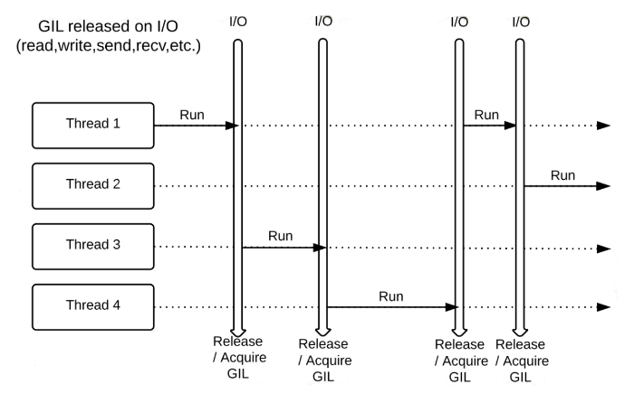

uWSGI
Contributors
What is uWSGI?
- Python WSGI (Web Server Gateway Interface) application framework
- Written in C
- Forking application server
- Optional HTTP server
- Process manager
…and the rest of the kitchen sink
Speaker Notes
- What is uWSGI?
- It’s a framework for writting web applications.
- uWSGI itself is written in C, but can run programs in different languages with a compatible interface.
- It handles a lot of the scaling issues for us.
Why do we need uWSGI?
- Galaxy is a Python web application without a web server
- Implements standard Python WSGI
- Some other application does the web serving
- Technically we could use any HTTP/WSGI interface
- Traditionally Python Paste
Speaker Notes
- We need uWSGI because Galaxy doesn’t include a web server.
- So Galaxy implements the standard Python WSGI interface.
- And another application can handle the web serving.
What is uWSGI used for?
.left[In a production Galaxy server:]
- To start, manage, and scale web workers
- Optionally, to start, manage, and scale job handlers
Speaker Notes
- Galaxy uses uWSGI to start, manage, and scale web workers.
- Additionally it can be used for web-less job handlers if you use that setup.
Why uWSGI?
Because Python can’t multithread.

.footnote[Image credit: Dariusz Fryta]
Speaker Notes
- Python cannot do multithreading due to the GIL or Global Interpreter Lock.
- However, python is multiprocess capable.
- uWSGI will provide our scalability.
Why uWSGI?
- Fork many Galaxy server processes
- Isolate job functions from web functions
- Built in load balancing
- Speak native high performance uWSGI protocol to nginx
- Uninterrupted restarting
- Can do anything you can imagine: uWSGI configuration options
Speaker Notes
- uWSGI can fork as many Galaxy processes as we need.
- Then it provides some built in load balancing with mules or zerg-mode.
- It has a high-performance protocol that nginx and apache both speak, for more efficiency.
- uWSGI enables uninterrupted restarts, which users love.
uWSGI
- Configuration
- uWSGI wheel
- Job handler mules
Speaker Notes
- There are three main sections we’ll cover: Configuration, wheels, and mules.
- First, configuration.
uWSGI Configuration File
uWSGI configuration is performed in the uwsgi key of galaxy.yml.
galaxy.yml.sample is never consulted.
.left[If using run.sh:]
- If no config exists, all necessary defaults are generated as command line arguments to uWSGI
- If a config exists, it is parsed, and any missing required options are passed as command line arguments to uWSGI
Galaxy servers deployed with Ansible do not use run.sh and should fully specify their uWSGI configuration.
Speaker Notes
- uWSGI configuration is done in the uWSGI block of the galaxy yaml file.
- The run shell script is not used in production, but has convenient behaviour for those users.
uWSGI default command line
Without a config file, the uWSGI command line is:
$ /home/nate/galaxy/.venv/bin/python3 .venv/bin/uwsgi \
--module 'galaxy.webapps.galaxy.buildapp:uwsgi_app()' \
--virtualenv /home/nate/galaxy/.venv --pythonpath lib \
--threads 4 --http localhost:8080 \
--static-map /static=/home/nate/galaxy/static --die-on-term \
--hook-master-start 'unix_signal:2 gracefully_kill_them_all' \
--hook-master-start 'unix_signal:15 gracefully_kill_them_all' \
--enable-threads --py-call-osafterfork
Speaker Notes
- The default uWSGI command line is quite complex with numerous arguments.
- It must specify a module to load and a function to run.
- A python path and virtualenv are loaded as well.
- A number of threads is specified and an HTTP port on which to listen.
- Static files required special mapping and some signal handling to ensure cleanup.
uWSGI command line
.left[Behind the scenes, run.sh calls scripts/get_uwsgi_args.py, which:]
- locates your config file (if any),
- parses it to determine whether you have set any of the default (or conflicting) options,
- determines the flags needed to run Galaxy.
You can take “full control” over this process by skipping run.sh and simply calling uwsgi directly, e.g. uwsgi --yaml config/galaxy.yml.
Speaker Notes
- If you’re using run.sh, it calls a python script to determine the command line.
- With Ansible this configuration is written in the galaxy yaml file.
uWSGI communication
- uWSGI can serve HTTP directly using the
--httpoption - uWSGI speaks a native protocol (which nginx also speaks) using
--socket
A proxy server is not required, but its use is strongly encouraged for performance reasons.
Speaker Notes
- uWSGI can speak either HTTP or it’s own native protocol.
- While a proxy server is not required, it is strongly encouraged.
- It can use this more efficient uWSGI protocol and provide additional performance.
- A proxy server can proxy static files, freeing uWSGI to focus on computation.
YAML config
uWSGI natively supports YAML configs (and INI, and PasteDeploy INI, and XML, and JSON, and …)
WARNING: “uWSGI YAML” is not real YAML!
.pull-left[ Real YAML
uwsgi:
# quoting forces string
socket: '127.0.0.1:8001'
# proper YAML list
mule:
- lib/galaxy/main.py
- lib/galaxy/main.py
]
.pull-right[ uWSGI “YAML”
uwsgi:
# quote chars read literally
socket: '127.0.0.1:8001'
# a uWSGI YAML "list":
# repeat keys
mule: lib/galaxy/main.py
mule: lib/galaxy/main.py
]
Speaker Notes
- uWSGI natively supports YAML configuration as well as a number of other formats.
- However, uWSGI’s YAML is not the same as real YAML.
- It uses repeated keys for lists.
YAML config
- “uWSGI YAML” only applies to the
uwsgisection ofgalaxy.yml- The
galaxysection must use real YAML
- The
- uWSGI can be compiled against libyaml for real YAML support
- Galaxy Ansible role can write both uWSGI (default), real YAML
Speaker Notes
- As a result of this uWSGI flavour of YAML, both are mixed in the Galaxy configuration file.
- The Galaxy section must use proper YAML.
- But not to worry! Ansible takes care of this dual-language configuration.
- And you never have to worry about it.
Configuration Schema
.center[[config_schema.yml][config-schema] contains possible options and their types.]
.left[config_schema.yml is the canonical source for config option documentation, from which:]
- .left[
[galaxy.yml.sample][config-sample]is generated] - Galaxy configuration options documentation is generated
Speaker Notes
- Galaxy has a listing of every configuration option in the config_schema file.
- This is used to generate the sample file and the documentation.
uWSGI
- Configuration
- uWSGI wheel
- Job handler mules
Speaker Notes
- The next main aspect of uWSGI is distribution, or wheels.
uWSGI Wheel
Galaxy’s uWSGI is not built like standard pip install uwsgi
A bit of technical minutiae that might help debugging
Speaker Notes
- Galaxy’s uWSGI is not a standard package.
- This is minutiae but it might help whenever you need to debug uWSGI issues.
uWSGI Wheel
- The challenge:
- Unlike Galaxy’s other framework dependencies, uWSGI is not a Python library
- uWSGI embeds the CPython interpreter
- Essentially uWSGI is Galaxy’s CPython
Speaker Notes
- At the beginning we discussed it was a C program, uWSGI is not a python library.
- So uWSGI embeds the CPython interpreter.
–
- The goal: Provide a no-compilation-required, no-dependencies installation method for Galaxy that includes uWSGI that:
- Doesn’t embed statically linked CPython
- Doesn’t require system
libpythonX.Y.so - Uses system CPython
Speaker Notes
- There are good reasons for this odd setup.
- Our goal was to provide a compilation and dependency free method for installation.
- Additionally it should not require system python libraries.
uWSGI Wheel
The uWSGI wheel is built differently than when built from source with
pip install uwsgi
- From source by pip:
- Built as a single
uwsgiELF binary embedding the CPython interpreter
- Built as a single
- As the pyuwsgi wheel:
- Built as a Python C extension into an ELF shared library
pyuwsgi.so - Loaded by a stub
uwsgiPython script by the CPython interpreter
- Built as a Python C extension into an ELF shared library
pyuwsgi wheel: the only way to precompile uWSGI in a way that does not require libpythonX.Y.so or ship CPython
Speaker Notes
- The uWSGI wheel is just built differently.
- When it’s built from source by pip, it comes as a single binary with CPython.
- When it’s usgin the wheel, it’s built as a Python C extension.
- This is loaded by a stub uWSGI script.
- This complex method was the only one to achieve our goals.
uWSGI
- Configuration
- uWSGI wheel
- Job handler mules
Speaker Notes
- Lastly, we’ll talk about job handling and mules.
class: top
Processes and Job Handling
uWSGI starts up in a single “master” process and then fork()s a configured number of anonymous web worker processes to serve web requests.
By default, web workers also handle Galaxy job (tool execution) preparation and completion.
Speaker Notes
- So how are processes and jobs handled with uWSGI?
- uWSGI starts up in a single “master” process and forks some copies.
- By default these also handle jobs.
–
Processing Galaxy job (tool execution) preparation and finishing is somewhat resource intensive and affects web responsiveness.
Production Galaxy servers traditionally start additional dedicated Galaxy “webless” (do not serve web requests) job handler processes.
Speaker Notes
- Processing galaxy jobs is quite resource intensive and can affect web responsiveness.
- As a result, typically web handling and job handling are in separate processes.
–
uWSGI provides a useful feature for running Galaxy job handlers: uWSGI Mules.
Speaker Notes
- uWSGI has a feature called mules which we use for handlers.
uWSGI Mules
Mules are processes fork()ed from the uWSGI master after the application has been loaded and web workers have fork()ed.
Mules can continue to run the same code or can load and run arbitrary code.
Mules can receive messages from the web proceses.
Mules can be pooled in to Farms, and messages can be sent to the farm to be handled by any mule in that farm.
Speaker Notes
- Mules are processes forked after the application has loaded.
- Mules can continue to run the same code or load more.
- Mules can communicate with the master.
- Optionally they can live in pools called farms, e.g. one for job handlers.
Mule Advantages
.pull-left.reduce90[ Webless handlers
- Config is complex
- Must manage handler processes externally (e.g. w/ systemd)
- Handler assignment:
- At random from configured handlers
- No regard as to handler health
- Notification via database
- Can be spread across multiple hosts ]
.pull-right.reduce90[ uWSGI Mule handlers
- Config is trivial
- Handler processes managed automatically by uWSGI master
- Handler assignment:
- “Grabbed” by healthy mule
- IPC (messaging) from web worker
- Mules run on same host as web workers ]
Speaker Notes
- Webless handlers can be quite complex to setup and manage.
- Mules offer a very simple alternative.
- However, this requires they run on the same host, which is usually ok.
Job Handler Mule Configuration
Adding job handler mules is performed by simply instructing uWSGI to start them in galaxy.yml:
uwsgi:
mule: lib/galaxy/main.py
mule: lib/galaxy/main.py
farm: job-handlers:1,2
That’s it! This Galaxy instance will now start and use two job handler mules.
Speaker Notes
- Mules can be defined by adding them to Galaxy’s configuration in the uWSGI section.
- Farms collect groups of mules.
The full startup picture
Speaker Notes
- The full startup picture.
class: top
uWSGI Start/Run and Job Handling Lifecycle
- Master process loads Galaxy application.
Speaker Notes
- We’ll go quickly through the entire lifecycle of a Galaxy process.
- First, the master uWSGI process loads Galaxy
–
- Master
fork()s web worker processes and begins serving web requests.
Speaker Notes
- This forks worker processes to serve web requests
–
- Master
fork()s job handler mules.
Speaker Notes
- Then mules are forked.
–
- Mules reload Galaxy application as job handlers.
Speaker Notes
- Mules reload the application to behave as handlers.
–
- The first mule to fully initialize grabs a lock on the farm message queue.
Speaker Notes
- The first mule ready establishes an exclusive lock on the queue
–
- All additional mules wait on the lock.
Speaker Notes
- Additional mules wait and compete to access the queue.
–
- A web worker receives a request for a new job.
Speaker Notes
- Next, a user visits Galaxy and submits a job.
–
- The web worker creates a
jobrecord in the database but leaves thehandlerfieldnull.
Speaker Notes
- The web worker creates a job in the database, but leaves it unassigned.
–
- The web worker uses uWSGI’s
farm_msg()function to notify thejob-handlersfarm that a new job is ready to run.
Speaker Notes
- The worker pings the job handler farm that a new job is ready to run
–
- The mule with the lock receives the message, assigns itself, and gives up the lock.
Speaker Notes
- The mule with the lock assigns itself and gives up the lock to go process the job.
–
- Another mule acquires the lock and waits for the next message.
Speaker Notes
- Another mule acquires a lock and waits patiently.
–
- Repeat
Speaker Notes
- This process repeats to process jobs.
Advanced: Job Handler Assignment Methods
Mules can only be used if web workers and job handlers run on the same host.
The database can be used like a message queue to get the benefits of mules using webless job handlers.
See Job Handler Assignment Methods for details.
Mules are preferred in scenarios where webless handlers are not needed.
Speaker Notes
- Mules are easy to setup, if you can run them on the same host.
- This is usually the case.
- If you have a more complex setup you might need webless job handlers.
- There is documentation for when you need it.
Advanced: Transparent Restart
Provides uninterrupted restart capability (clients do not notice restarts).
See Transparent Restart and uWSGI Zerg Mode documentation for details.
Speaker Notes
- Zerg mode (named after the game StarCraft) can be used for transparent restarts.
- Users really like this, and it gives you freedom to make changes behind the scenes.
Advanced: Zerg Mode + Job Handler Mules
Combining both advanced modes was long thought to be impossible.
However, a proof of concept has emerged!
Speaker Notes
- Combining both was not thought to be possible but there is ongoing work.
- A proof of concept exists, but it is not in any Ansible playbook yet.
Thank you!
This material is the result of a collaborative work. Thanks to the Galaxy Training Network and all the contributors! Tutorial Content is licensed under
Creative Commons Attribution 4.0 International License.
Tutorial Content is licensed under
Creative Commons Attribution 4.0 International License.